水泥做的，有鋼筋的，用廢料做的。
你送出去的不只是一件家具——是你想留下的那句話，刻進去，比你活得更久。
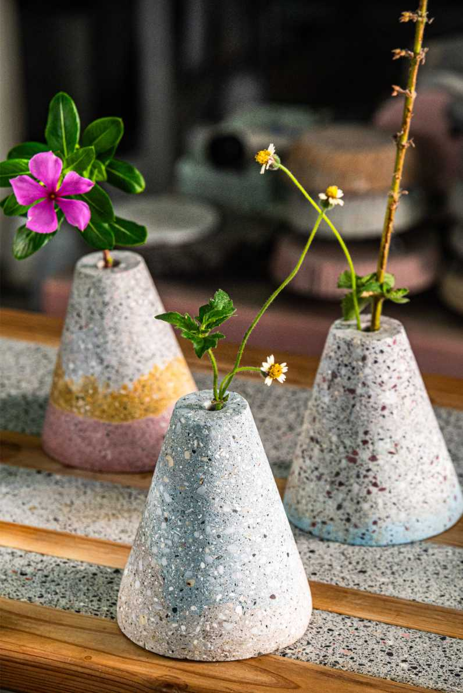
適合桌面、玄關、工作室與企業活動。每一件都能刻字、附材料故事，讓收禮的人知道它不只是漂亮，而是有來源、有重量、有記憶。
水泥不會褪色、不會腐爛、不會被遺忘。你對某個人說不出口的話，讓它刻在這裡。
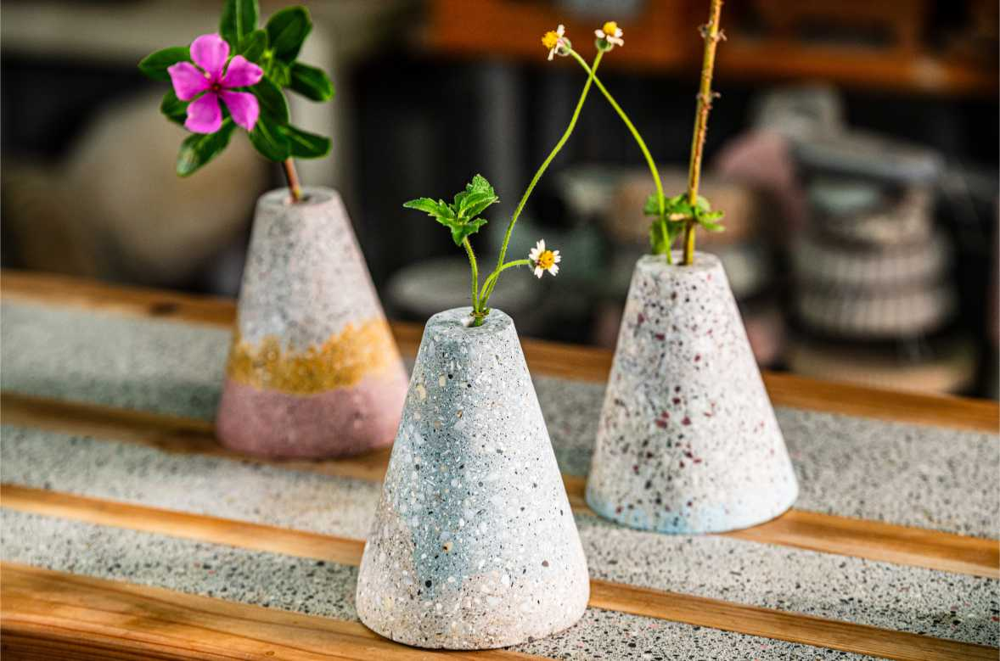
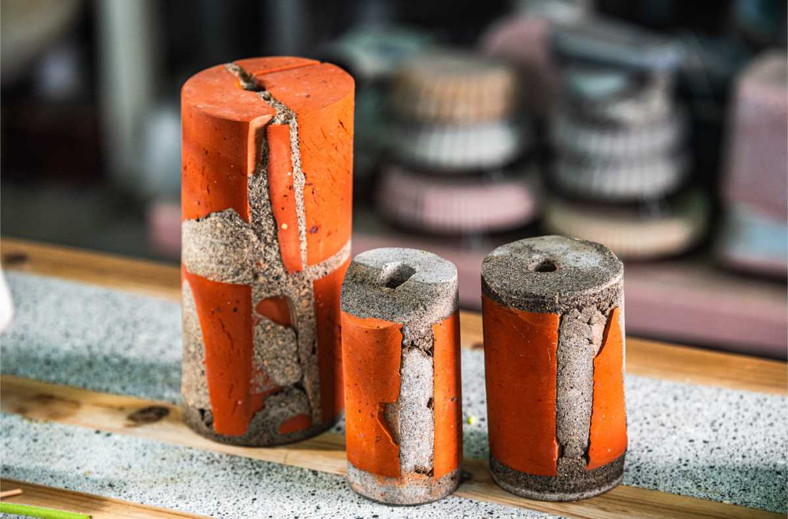
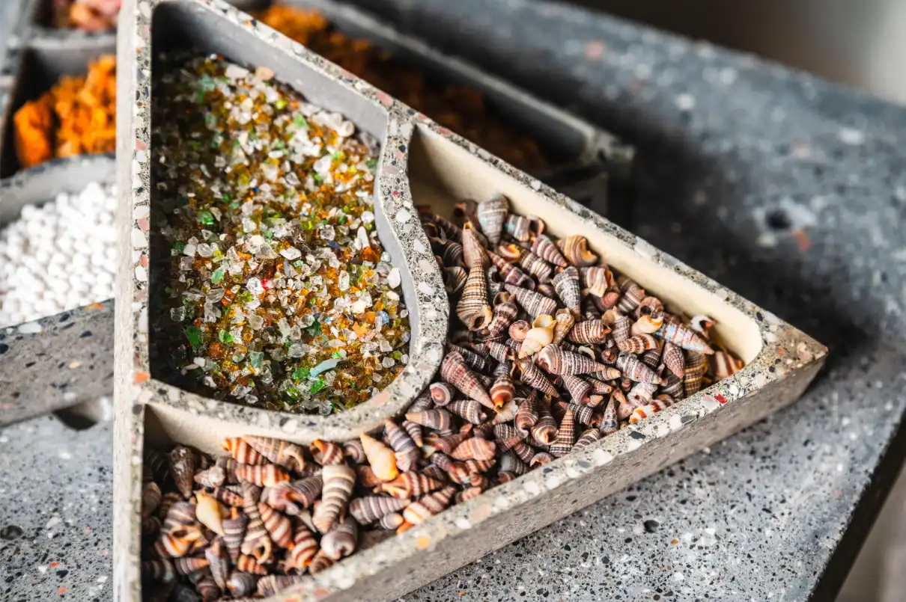
玫瑰七天凋謝，巧克力吃完就沒了。水泥家具壓死都不會壞。
比起一次性花束，桌面小物更容易進入日常。它可以是一句話、一個日期，也可以只是放在你們共同生活裡的小標記。
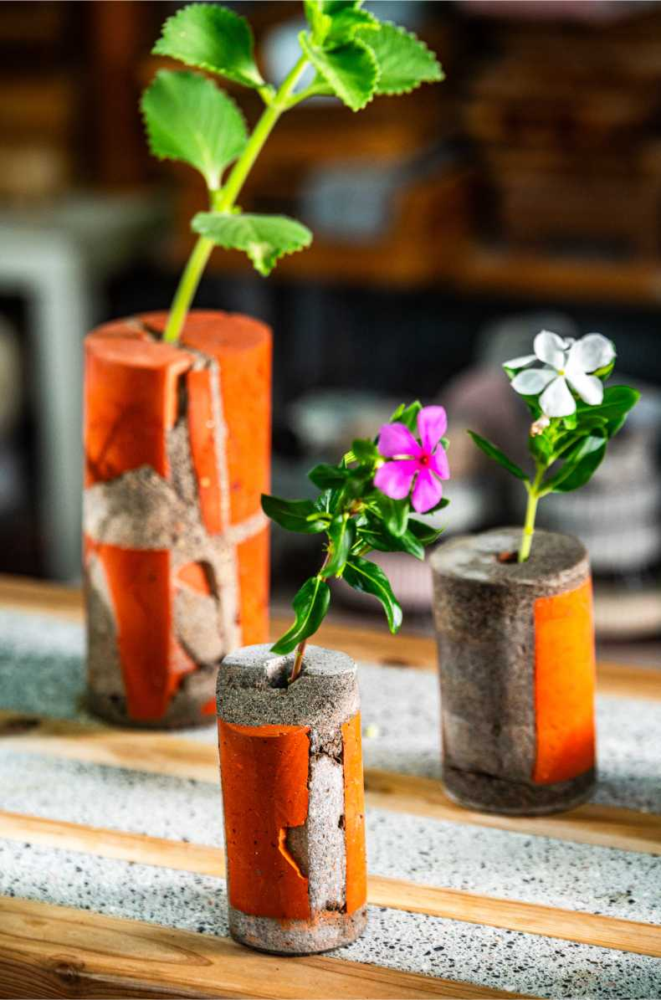
「你的重量，剛好填滿我這個坑。」
兩件同款，各刻一字——你的，和他/她的。每天放上杯子的瞬間，都是一次記起。
「蓋房子的規格，只為你一個人。」
附材料故事卡——告訴對方這塊石子來自哪裡，這件作品為什麼只有一個。
「愛一個人就像刻保麗龍——你要的不是，才是你要的。」
你選一個意象，Rovi 老師手工割製，親簽限量。全世界獨一張。
「玫瑰七天凋謝，巧克力吃完就沒了。— Concredia.Lab · 情人節廣告詞
水泥壓死都不會壞。」
把你想說的話刻進去。他們每次喝茶，每次放東西，都會摸到那幾個字。
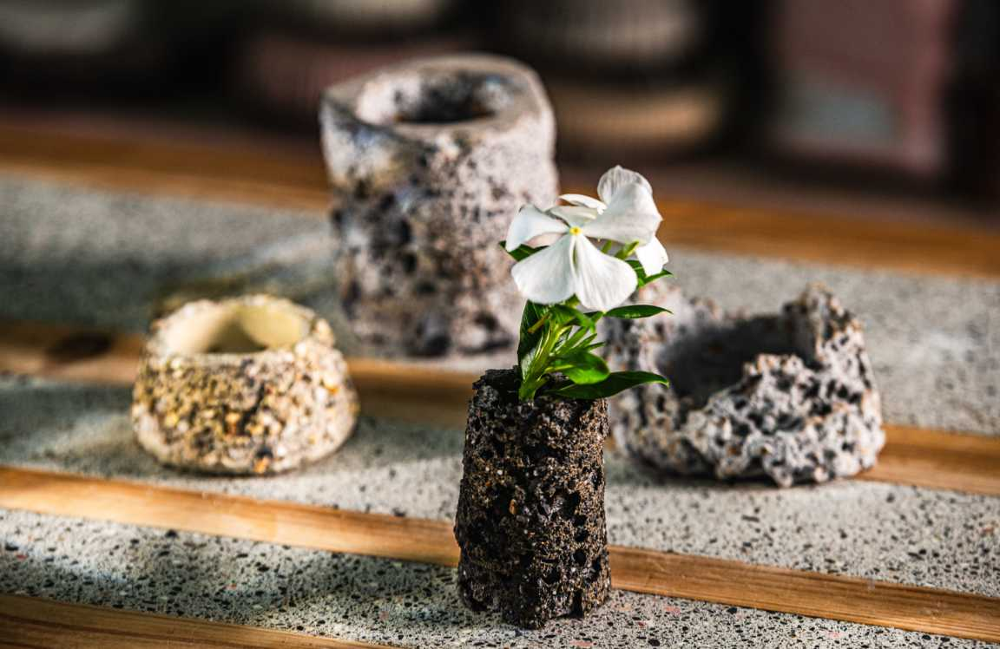
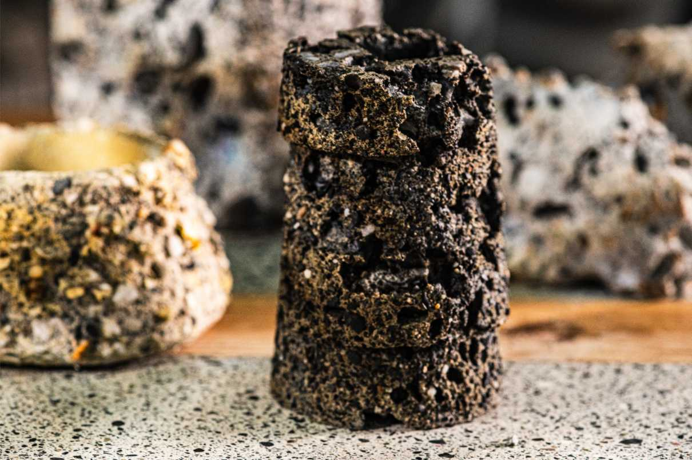
「謝謝妳，把我養成這樣不怕重的人。」
刻上媽媽最常說的那句話，或是你一直想跟她說卻說不出口的字。
「你教我蓋房子的方式，我用來做這張桌子。」
工地廢料，鋼筋，養護——父親節的禮物，就該這麼硬。
「這個家，因為有你們，才有重量。」
一對搭配，放在他們家的茶几上，說你從來都記得家。
廢料取自台灣各地——彰化蚵殼、花蓮玉礦、高雄爐石。每件作品裡，都有這片土地的記憶。
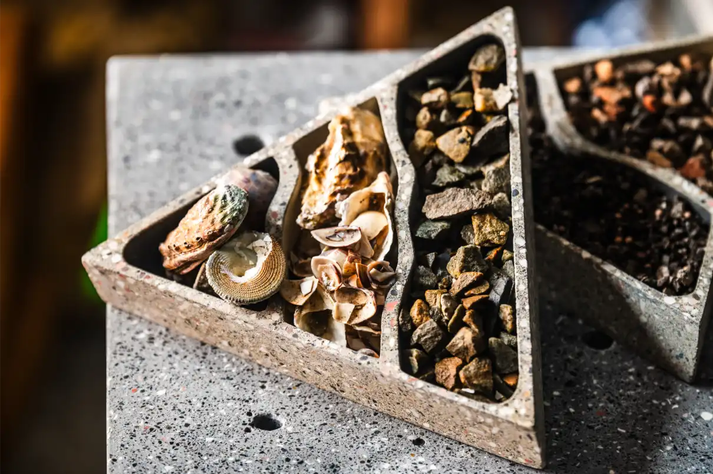
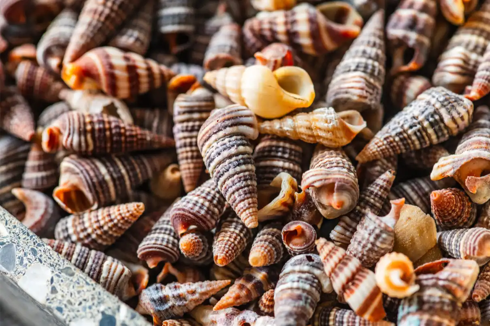
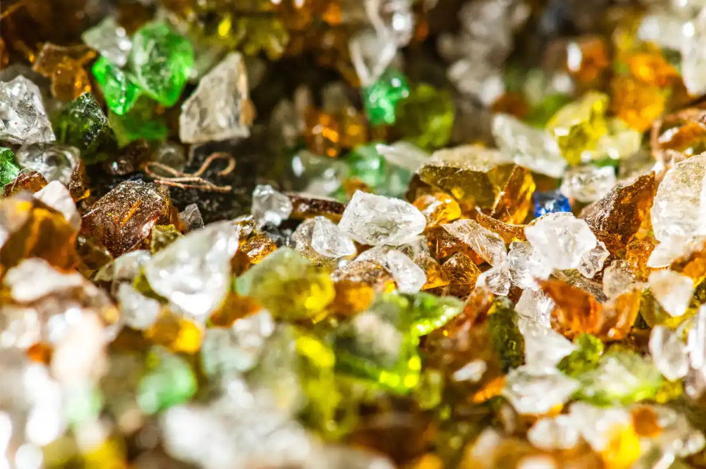
「這一年，用最硬的方式把祝福刻下來。」
刻上家族姓氏、生肖或一個字——土、金、福。送長輩，送至親，送一個會留下來的新年。
「月餅吃完了，這張桌子還在。」
中秋送禮，送一件可以傳下去的東西。月圓形、廢玻璃骨料，光線折射像月光。
「廟宇的圖騰，刻進你家的桌子裡。」
結合台灣傳統宗教圖案、地方文化符號，與 Rovi 老師合創一件帶有台灣靈魂的作品。
「台灣地氣，世界最硬的桌子。— Concredia.Lab · 台灣本土 DNA
你來自哪裡，就用那個地方的材料。」
購物節快閃聯名方案：限定款刻字、盲盒材料包、士敏小礦獸啟動碼。庫存不多，過了就沒有。
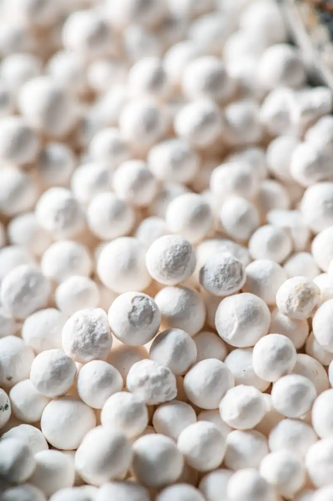
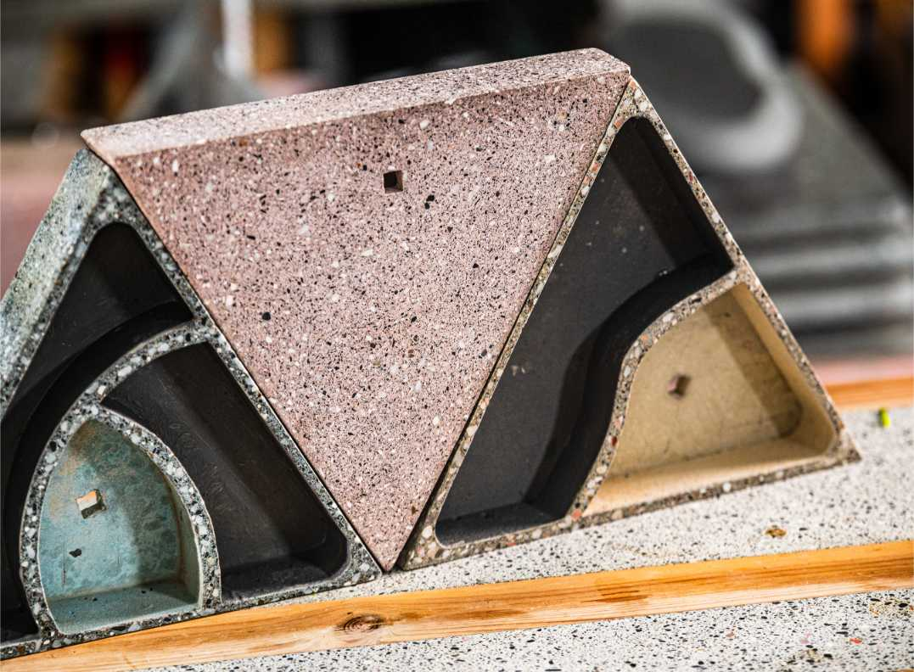
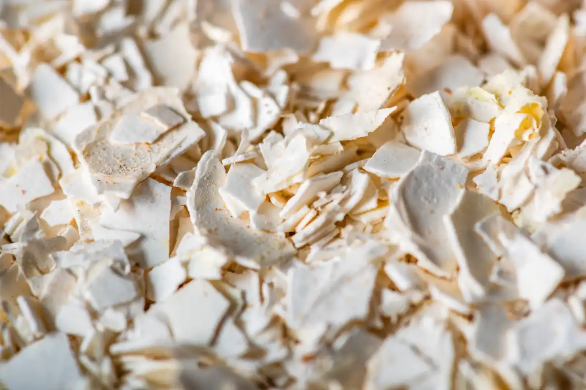
購物節限定策略：每個購物節推出限量（20–50件）節日版刻字，訂購即附專屬材料故事卡 + 士敏小礦獸啟動碼。不打折，只限量——因為這種東西沒有第二件。
企業尾牙、週年慶、開幕落成、獎勵旅遊——送一件說得出故事的東西。
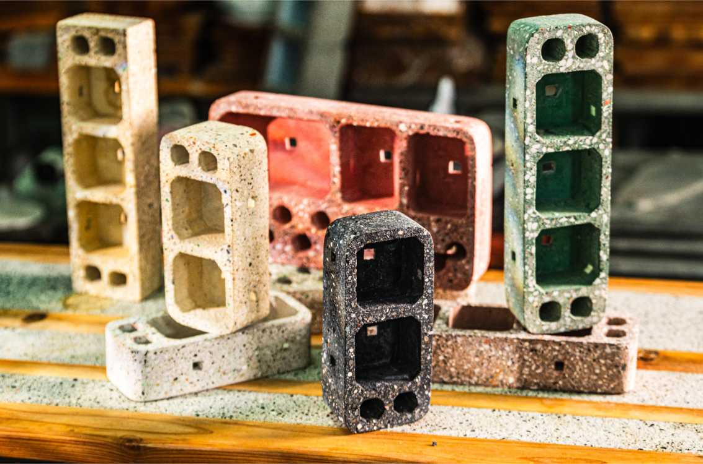
每件作品附材料溯源文件，含廢料去化量、再生料佔比（60–70%）、SDG 對應細項，可直接引用於企業永續報告書。
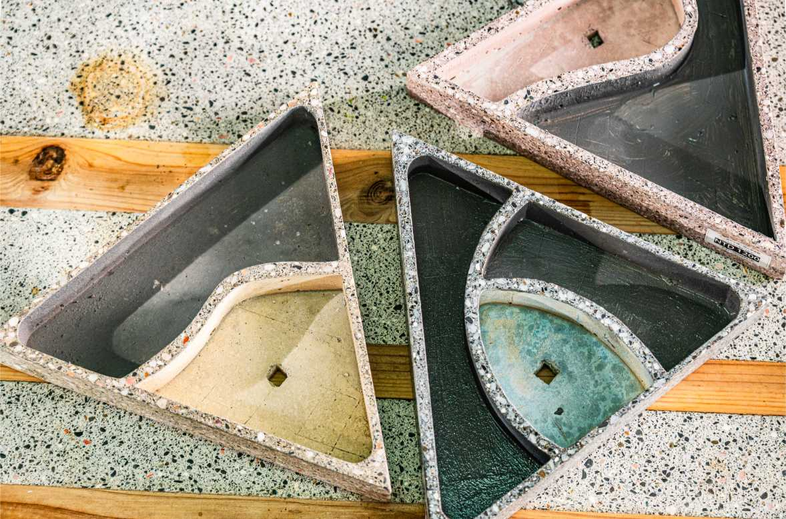
企業禮品不只要好看，也要能交代來源。每批採購可整理材料故事、數量、去化重量與 ESG 引用文字。
每件採購紀錄包含：廢料去化量（kg）、再生料佔比（%）、取用地點。
例：30 件杯墊組 = 去化廢料 12kg
每一筆採購，都直接支撐台灣獨立職人工作室的運作，以及後續的社區合創計畫。
每件附產地與工法說明
採購完成後提供：材料溯源證書（PDF）、廢料去化量計算表、ESG 年報引用段落草稿。
最低 10 件起提供
綠色採購標章適用：Concredia.Lab 作品使用 60–70% 再生廢棄物作為骨料，符合行政院環保署「綠色採購」精神，可作為企業公務採購永續主張佐證。詳細文件規格請來信洽詢。
給某人的愛意。紀念著什麼。或是一段詩句、一個日期、一個字——
水泥記性很好，而且比你活得更久。
廟宇圖騰、家族姓氏、原民紋路、地方產業符號、婚禮誓詞——
任何有意義的文字或圖像，都可以成為一件作品的靈魂。